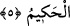

Dostun ahd ü peymânı olmayan her şeyden ayrıldık.
Nitekim bu husus sonraki âyette şöyle dile getirilmektedir:
5. Rabbimiz! Bizi, inkâr edenler için deneme konusu kılma, bizi bağışla! Ey
Rabbimiz! Yegâne galip ve hikmet sâhibi, ancak sensin.
“Rabbimiz! Bizi inkâr edenler için deneme konusu kılma.” Yâni onları bize gâlip ve
hâkim kılmak sûretiyle, bize dayanamayacağımız şekilde fitne çıkarmalarına ve azab
etmelerine fırsat verme! Burada geçen fitne kelimesi mef’ûl, Rabbenâ kelimesi
öncekinden bedeldir. Bundan sonraki Rabbenâ kelimesi de böyledir. Bazı âlimler de
şöyle demişlerdir: “Rabbimiz! Bizi inkâr edenler için deneme konusu kılma; yâni bizi
fakir onları zengin kılma ki, bu sebeple kendilerini doğru yolda, bizi de bâtıl yolda
zannederler.”
“Bizi bağışla!” Bizden sâdır olan günahlarımızı bağışla! Şâyet bizi bağışlamazsan bu
durum, ayıplarımızın açığa çıkmasına ve neticede korkup kaçmak isteyeceğimiz bir
felâkete sebep olur.
“Ey Rabbimiz! Yegâne gâlip ve hikmet sâhibi, ancak sensin.” Bu cümlede ki
Rabbenâ nidasının tekrarı, Cenab-ı Hakk’a yakarış ve niyâzda mübalağa ve ifâdenin
yoğunluğu içindir. Böylece bu, önceki duâ ve yakarışlara bağlı ve onların devamı olur.
Hikmet ve sonsuz kudretin O’na âid olduğunu ispatla Cenab-ı Hakk’ı övmeğe vesile
kılmak için sonraki cümlelere başlangıç olması da mümkündür. Birinci görüşün daha
kuvvetli olduğu açıktır. Secavendî de, Rabbenâ kelimesi üzerine vakfın câiz olduğunu
belirten işâreti koymakla birinci görüşü tercih etmiştir. Bu işâret onun ıstılahına göre
durmanın da geçmenin de câiz olduğunu göstermektedir. Bahsedilen vakıf işâreti, câiz
kelimesinin baş harfi olan Cim’dir.
Yâni “Kendisine ilticâ edip sığınanın zelil olmadığı, O’na güvenenin ümidsizliğe
düşmediği yegane gâlib olan, her yaptığında ancak sonsuz hikmet sâhibi olan yegane
varlık sensin!” demektir.
İşâret ehli bazı kişiler şöyle demişlerdir: Rabbimiz! Dostlarını kendinde fânî kılarak
hikmetinin bâkiliği ile güzellikle dirilten sensin. Bu takdirde, fitneden maksad, hevâ
hevesler ve nefis karanlığının üstün gelmesi; mağfiretten maksad da, ahadiyet hüviyeti
ile açığa çıkmış günahları vâhidiyyet sıfatlarıyla örtmektir.